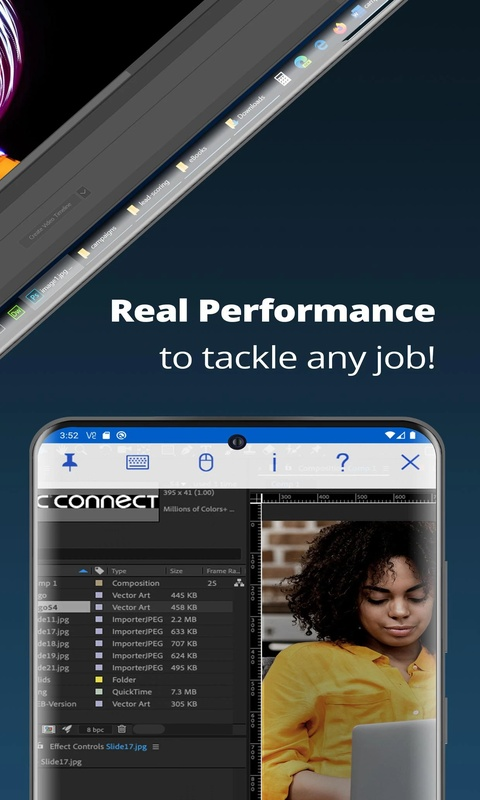

VNC Viewer 快问快答——远程控制你想知道的都在这
整理了一组关于 VNC Viewer 的高频问题，从它是什么、谁该用、树莓派怎么配、加密到底靠不靠谱到和同类工具的差别，一问一答直接给结论。
整理一组关于 VNC Viewer 的快问快答——如果你正在纠结远程控制该用哪款、树莓派怎么 headless、或者想确认 RealVNC 到底安全不安全，下面这些问题可能刚好就是你想问的。
VNC Viewer 到底是什么？跟 RealVNC 什么关系？
一句话：VNC Viewer 是 RealVNC 公司开发的远程桌面客户端，vnc viewer官网上能直接下载安装包和配套的 Server 端程序，用来连接装了 RealVNC Server 的远程电脑。它是 RealVNC Connect 整个产品体系里的"控制端"——你手上的设备（手机、笔记本、平板）跑 Viewer，远程那台被控制的设备（树莓派、云服务器、家里老人的电脑）跑 Server，两边连起来就是远程控制。
很多人会把 VNC 协议和 RealVNC 混为一谈。VNC 是一种远程桌面协议，最早起源于剑桥大学，后来衍生出 TigerVNC、TightVNC、UltraVNC 等各种开源实现。RealVNC 是 VNC 协议的商业实现——在协议之上叠加了云连接、端到端加密、设备密码管理这些工程化能力。免费的 TigerVNC 之类默认完全不加密，而 RealVNC Connect 把 AES-128/256 加密做成了默认强制项，这是两者最本质的差别。
谁该用它？有没有典型场景？
三类人最适合：一是搞树莓派玩 IoT 的，二是需要远程运维多台机器的 IT，三是想远程帮家里长辈处理电脑问题的普通人。
树莓派场景尤其典型——Raspberry Pi OS 从 Bullseye 开始默认预装 RealVNC Server，只要在 raspi-config 里把 VNC 开关拨到 Enabled，就能直接从手机或电脑接进去。树莓派跑 headless（无显示器）时还得开虚拟模式，不然 VNC Server 会因为检测不到物理显示器而黑屏。这一套配置是树莓派社区的标准做法，稳定性比自己折腾 xrdp 或 VNC 其他实现要高得多。
企业运维场景下，RealVNC Connect 经过了 ISO 27001、HIPAA、GDPR、SOC 2 合规认证，走内部安全审批比用 TeamViewer 或 AnyDesk 方便——很多公司的安全部门只认有明确合规材料的工具。
安装麻烦吗？手机能不能用？
桌面端基本是一键装——去下载拿对应系统的安装包（Windows、macOS、Linux 都有），双击走完向导就行。安装过程中会让你登录 RealVNC 账号，没有的话注册一个免费账号就能开始用。
移动端体验反而是亮点——iOS 和 Android 都有原生 App，手机上可以直接用触摸手势操作远程桌面（单指点击、双指缩放、长按右键菜单都支持）。连树莓派的时候在手机上点点划划就能进桌面，出差在外调家里的智能家居网关特别方便。

怎么连远程设备？Direct 和 Cloud 选哪个？
两种连接方式，推荐长期用 Cloud，临时调试用 Direct。
Direct 直连就是局域网内直接用 IP 加端口号（<设备 IP>:5900）连接，配置简单但有两个硬伤：一是默认不加密，远程画面在网络上明文传输；二是出了局域网就连不上，需要端口映射或 VPN。临时调试一台树莓派用用还行，长期用不够安全也不够方便。
Cloud 云连接是 RealVNC Connect 的核心能力——Server 端登录你的 RealVNC 账号后，远程设备自动出现在你所有 Viewer 的 Team List 里。不管你人在国内还是国外、远程设备在谁家路由器后面，只要两边能上网就能连，而且全程强制 AES-128/256 加密。这也是 RealVNC 相比开源 VNC 实现的最大优势——不需要你折腾端口映射、不需要自己配证书，开箱即用的跨公网安全连接。
加密到底靠不靠谱？跟 TeamViewer 比怎么样？
RealVNC Connect 的加密架构是行业第一梯队的水平。Cloud 云连接强制 AES-128/256，叠加 RSA 2048 位非对称密钥做会话初始握手，还有完美前向保密——每次会话用独立的临时密钥对，即使某一次会话密钥泄露，历史会话也无法被回溯解密。这比很多网站用的 TLS 模型还强，不少 HTTPS 站点都没开完美前向保密。
免费的 TigerVNC、TightVNC、UltraVNC 默认完全不加密，这是它们最大的安全短板。RealVNC 官方还公开声明了几条安全原则：RealVNC 公司本身看不到你的远程会话内容（端到端加密、密钥只在 Server 和 Viewer 两端）、不录制远程会话（除非企业显式开启）、每一条连接都按"在敌对网络上"处理。想深挖加密细节和认证配置可以翻vnc viewer文档，里面有完整的安全白皮书摘要和企业合规对照表。
远程打印怎么玩？能省多少事？
远程打印是 RealVNC Connect 一个被低估的实用功能——远程电脑的打印对话框里直接出现你本地打印机的名字，点一下文档就从远程传到本地打印机打出来。不用手动下载文件、不用把远程打印机驱动装到本地，整个过程远程电脑完全不知道这台打印机不在旁边。
Server 端需要额外装一个 Printer Driver（macOS 8.x 自动带、Windows 单独下、Linux 目前不支持），Viewer 端不需要任何配置——发起连接时 Viewer 会自动把本地可用打印机列表推送给 Server。不过有两个限制：只有 Plus 和 Enterprise 档才有，Essentials 免费档没有；而且本地打印机必须在线，打印机关着远程会报打印失败。
设备密码和 RealVNC 账号密码是同一个吗？
绝对不能设成一样，这是 RealVNC 安装向导里明确提示的。RealVNC Connect 里有两个不同层级的密码：RealVNC 账号密码是登录 RealVNC Connect Portal 用的（邮箱+密码），VNC Device Password 是每台远程设备独立的——Viewer 端连接某台设备时需要输入这个密码。
设备密码建议 12 位以上，混合大小写、数字和特殊字符，而且每台远程设备用不同的密码。密码存储也分平台：Windows 用 DPAPI 加密、macOS 存 Keychain、Linux 存在 ~/.vnc/passwd（加密格式不是明文）。如果忘了设备密码且完全连不上那台机器，最干净的做法是重装 RealVNC Server 或用 vncserver -clean 命令行重置。
跟同类工具比，选它还是选别人？
选 RealVNC 的核心理由：树莓派官方支持、开箱即用的 Cloud 连接、强制加密、合规认证齐全。如果你手上有 Raspberry Pi、需要跨公网连接、或者公司安全部门卡合规，RealVNC Connect 是最省事的选择。
不选 RealVNC 的场景：纯内网临时用、不想注册账号、或者预算紧张。这种情况下 TigerVNC 或 TightVNC 免费版就能覆盖基本需求，只要记得自己在前面套一层 SSH 隧道就能补上加密短板。
跟 TeamViewer、AnyDesk 比，RealVNC 的优势是定价透明（免费 Essentials 档够个人用、Plus 档按设备数收费）、不归属于大厂商（不会突然改政策封设备）、协议开放（基于标准 VNC 协议，理论上任何 VNC Viewer 都能连 RealVNC Server）。劣势是纯移动端体验不如专门为远程协助设计的 TeamViewer、没有跨平台文件传输的拖拽交互那么流畅。
免费档够用吗？升级值不值？
Essentials 免费档对个人和小团队完全够用——Cloud 云连接、端到端加密、多设备同步这些核心能力都在，限制主要是远程打印、会话录制、多因素认证这些企业级功能。个人用、远程帮家人处理电脑问题、树莓派开发调试，Essentials 档已经能覆盖大部分场景。
升级 Plus 档的触发点一般是：你需要远程打印功能、团队超过 5 台设备、或者想给每台设备配独立权限。Plus 档按设备数收费，价格在主流远程工具里算中等。
最后一句：如果你有树莓派需要远程控制、或者在找一个安全靠谱的跨公网远程桌面方案，VNC Viewer 值得装——免费档够个人用、Cloud 连接免折腾、加密不缩水。顺手提一句，这套 VNC 相关的资料我在GitHub、Gitee、GitCode三处都同步了一份，方便不同偏好的人取用。